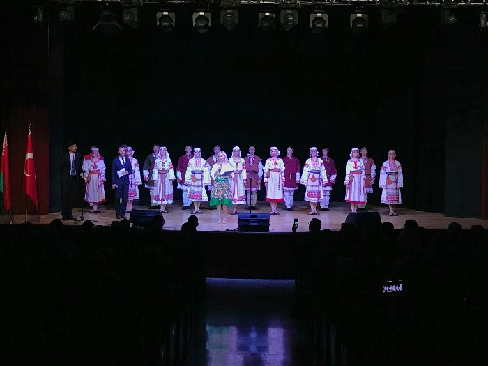

Cultural event in Hungary
.jpg)
Cultural event in Oman
The Day Of Belarusian Culture
One of the important directions in the development of the international cooperation in the Republic of Belarus with other countries is holding the Days of Belarusian Culture abroad. It will promote the national cultural achievements, strengthen cultural ties, ensure the mobility of artists and creative people, export cultural products, and develop intercultural dialogue.
The Day Of Belarus in Hungary
The program of the Days includes concerts by the State Dance Ensemble of Belarus and the vocal group Camerata of the Belarusian State Philharmonic Society.
The Belarusian dancers and musicians will perform in Godollo on 9 February and in Budapest on 10 February.
The Culture Ministry pointed out that the Days of Belarusian Culture in Hungary have been organized in line with the decision adopted by the Belarus-Hungary intergovernmental commission for economic cooperation on 9 October 2014.
The Belarusian dancers and musicians will perform in Godollo on 9 February and in Budapest on 10 February.
The Culture Ministry pointed out that the Days of Belarusian Culture in Hungary have been organized in line with the decision adopted by the Belarus-Hungary intergovernmental commission for economic cooperation on 9 October 2014.
The Day Of Belarus in Oman
MINSK, 2 March (BelTA) – The Sultanate of Oman will host the Days of Belarusian Culture on 2-6 March, BelTA learned from the Belarusian Culture Ministry.
The dance performances reflect love to nature, the character of the nation and its historical past. For example, the dance company Khoroshki will show the beauty of the native nature in winter. The spectators will see the real Belarusian winter, which is snowy and cold, but very beautiful with its snowstorms and white fluffy snow. The dance company will also show the everyday life of the Belarusian people. The unique choreographic performance Falconry will take the audience to the castle era of the Belarusian history, show the ancient engagement traditions. The spectators will also be pleased to see the Oriental Fantasy music act performed by the orchestra group of the dance company.
The dance performances reflect love to nature, the character of the nation and its historical past. For example, the dance company Khoroshki will show the beauty of the native nature in winter. The spectators will see the real Belarusian winter, which is snowy and cold, but very beautiful with its snowstorms and white fluffy snow. The dance company will also show the everyday life of the Belarusian people. The unique choreographic performance Falconry will take the audience to the castle era of the Belarusian history, show the ancient engagement traditions. The spectators will also be pleased to see the Oriental Fantasy music act performed by the orchestra group of the dance company.